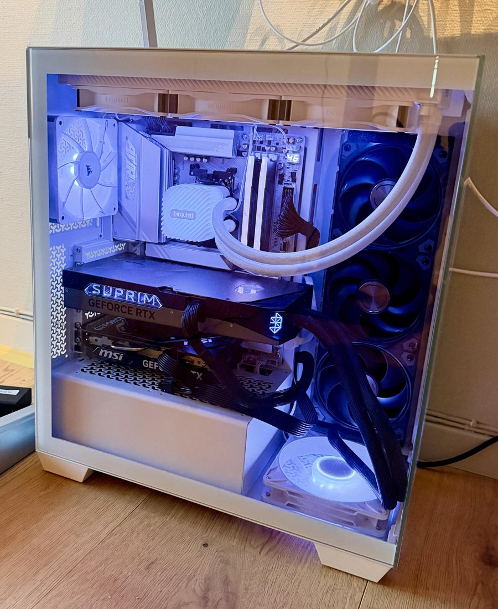
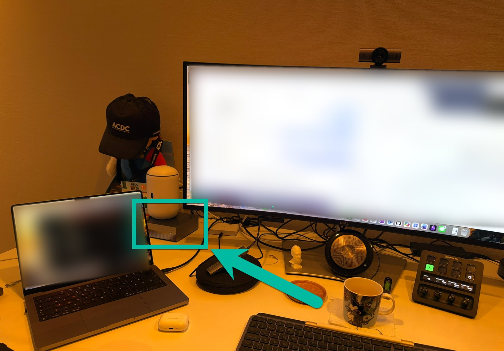

Existing vulnerabilities
Agents can help find and fix
CyberGym-E2E tested 920 historical vulnerabilities across 139 projects. Discovery remained challenging; patching was more successful.
DNB Tech Summit · Oslo · 12 November 2026
More code. More choice.
What becomes scarce?
So, do we still need open source?
Mikael Svenson
Search Architect · Microsoft
My side project · PnP Modern Search · ~14,000 Microsoft 365 tenants a month
Live agent · launch, then leave it working
“Start fresh. Build a one-minute browser demo
with music and old-school graphics.
Make the music with ComfyUI. Use an MIT library.
Draw D → N → B. Document reuse in REUSE.md.
Inspect headlessly, muted. Improve. Deliver a play link.”
Local model · running at home right now
Full brief: agent1/PROMPT.md (live demo)

01 · What changed
What happened · GitHub Octoverse 2026
Merged PRs · public + private · linear scale from zero
Measured years end 30 September.
First drafts changed
Agent-started first drafts · all GitHub repository types
New projects, too
of commits from June onward
came from brand-new repositories.
Octoverse 2026 · share of commits, not growth in durable OSS projects
Established projects + a new app family
| Year | PnP Modern Search | Ruff | ||
|---|---|---|---|---|
| PRs | PR authors | PRs | PR authors | |
| 2024 | 101 | 25 | 2,932 | 319 |
| 2025 | 86 | 18 | 4,375 | 319 |
| 2026* | 175 | 18 | 5,736 | 581 |
| App | PRs | PR authors | Merged | Still open |
|---|---|---|---|---|
| PhotoCraft | 6,445 | 926 | 4,265 | 1,295 |
| WordCraft | 3,513 | 564 | 1,711 | 1,334 |
| GridCraft | 2,129 | 430 | 989 | 952 |
¹ Excludes bots; counts are lifetime, not annual.
*2026 through 2 Nov; 2024–2025 full years.
PnP · Ruff · 2 Nov · Craft apps: Photo / Word / Grid · 12 Nov 2026 · GitHub REST
02 · Open source
Two PRs upstream. One accepted. One declined.
What a maintainer asks · from my side of the PR
What stays with us
Cheaper code changes the work.
It does not remove ownership
of the problem.
A contributor's experience · personal account
Freedom to fork.
Responsibility to keep it useful.
Why I still contribute
More contributors.
Perspectives beyond your own team.
My first: memory-mapped data structures · CodePlex, 2009 → adapted on GitHub, 2014 → unmaintained, 2016
03 · Open source
Our MIT project shipped a GPL component. A person caught it, not a tool.
Security · benchmark evidence, not a forecast
Existing vulnerabilities
CyberGym-E2E tested 920 historical vulnerabilities across 139 projects. Discovery remained challenging; patching was more successful.
Generated code
On SecureVibeBench, the best tested setup produced functionally correct and secure solutions for 23.8% of tasks.
Benchmarks show capability and failure—not a rise in real-world vulnerabilities or proof of malicious intent.
Security · one PR, two checks
The feed proxy controls what comes in.
It does not review our feature.
Microsoft internal package policy · the general pattern
A release-age gate buys detection time.
It does not certify safety.
Branch · models
// what is actually open?
Downloadable does not mean unrestricted.
Some licenses limit who, where and what for: check before production.
// my setup · a choice, not a religion
local gives me
I also own

// coding agents · route by measured success
Can it use tools, recover and prove the change?
// geopolitics · access · service stability
Terms · regions · outages · quotas · retirement · data paths
// a proposed design rule
A compatible API is not
compatible behavior.
04 · Open source
Back to the work · reuse, evidence and ownership
Open REUSE.md · which library · which license · which notices · what it built itself
What may come next
Three plausible paths · next 6–12 months
More projects
More proposed changes
Trust gates
Review budgets
Converge on
shared foundations
These can happen together. Watch merge time, rework,
maintainer load and repeat contributors—not only PR volume.
Open source needs its next maintainers
If agents do the practice work,
how do we grow the next maintainer?
05 · Inner source
Last year: shared skills in a monorepo. Sharing is still the hard part.
Inner + open source · the coordination problem
Same package
Both teams adopt one library, then build separate internal tools around it.
Different packages
Similar options lead to different dependencies and maintenance work.
No good fit
Build in-house—or start another open-source project.
Agents can surface options—or generate another implementation. Who coordinates reuse?
A practical answer to the reuse problem
Findable instructions. Verifiable behavior.
A named team to maintain it.
A question for DNB
Could an agent gather the evidence?
Could every team reuse that workflow?
So, do we still need open source?
Mikael Svenson · Search Architect · Microsoft
Questions
Implementation? Review?
Context? Trust? Time to learn?
Appendix · not part of the timed narrative